Onehdy jsem se tu zmínila, že jednu prázdninovou neděli jsme strávili na výletě v Koryčanech u Franty na chatě. A protože jsem dnes stahovala fotky do počítače, rozhodla jsem se, že se podělím o pár snímků.
Koryčany jsou moje srdcovka a místo, kde se vždycky ráda vykoupu v kašně (haha) :D… Protentokrát se koupel nekonala - od rána to totiž vypadalo na pěkný déšť. Byla jsem docela překvapená, jak jsou Koryčany od Brna blízko - je to dokonce blíž než k nám domů :D. Za hodinku jsme už byli na místě, přivítali se s Frantou a jeho rodinou a taky s naší novou čtyřnohou kamarádkou Terezkou :-). Terezka se s námi skamarádila velmi rychle. Stačilo, aby párkrát zahřmělo, a už jsem ji měla na klíně :D. Chudinka se celá klepala strachy a hledala u mě úkryt.
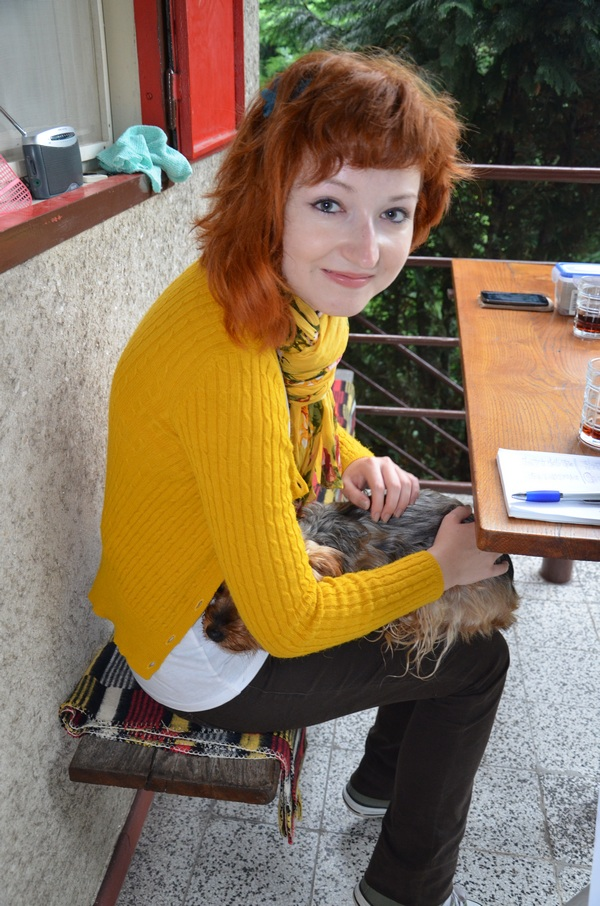
Janie a posera :)
Během poledne počasí nevypadalo moc příznivě. Docela vydatně pršelo. Naštěstí jsme s sebou přivezli nějaké hry, a tak jsme si dlouhou chvíli, než se počasí umoudří, krátili hazardem O:-)…
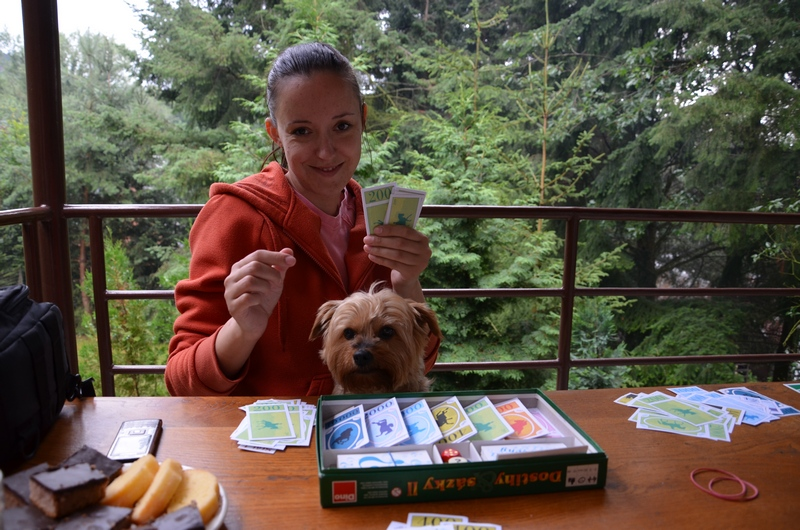
Dostihy a sázky
…a dobrým jídlem :-)…
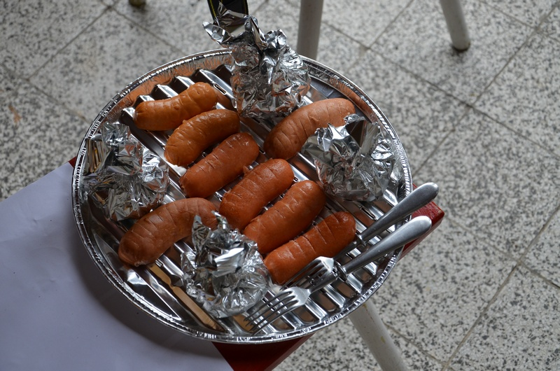
Obídek
A počasí se skutečně umoudřilo :-)! Sotva jsme si vyhráli a najedli se, mraky se roztrhaly a vykouklo sluníčko. A tak jsme teda vyrazili ven… Na Cimburk, kam jsme původně měli namířeno, jsme nakonec nedošli (je to daleko :D). V půlce cesty jsme to otočili a vrátili se, protože už bylo docela pozdě a nechtěli jsme se hnát. Dostali jsme ale od Franty fotoškolení, a tak jsme vám aspoň mohli novým přístrojem zmapovat, jak krásně tam teď v létě je.
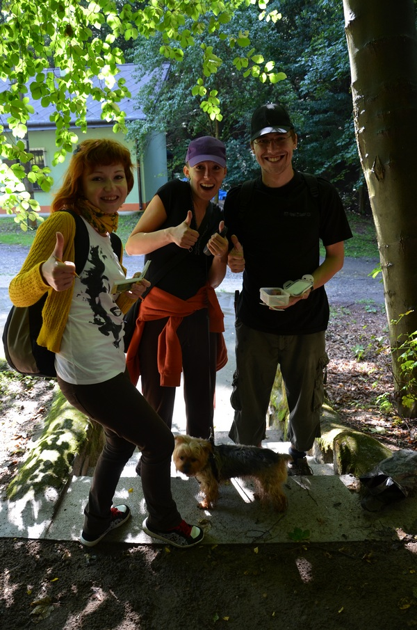
Našli jsme kešku :)!
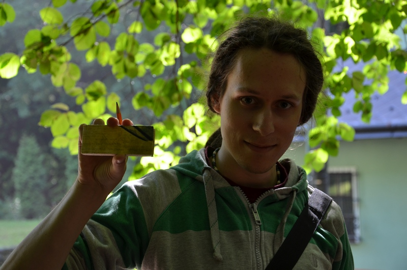
No fakt :)!
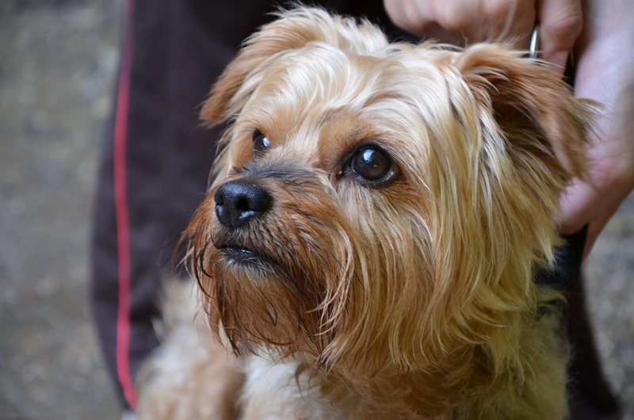
Vyvenčili jsme se :)
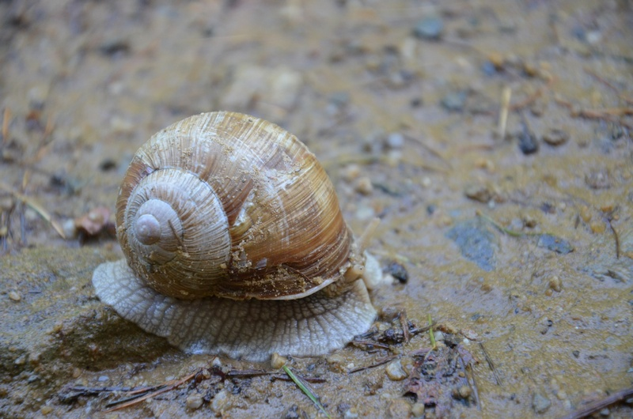
Potkali jsme hlemýždě
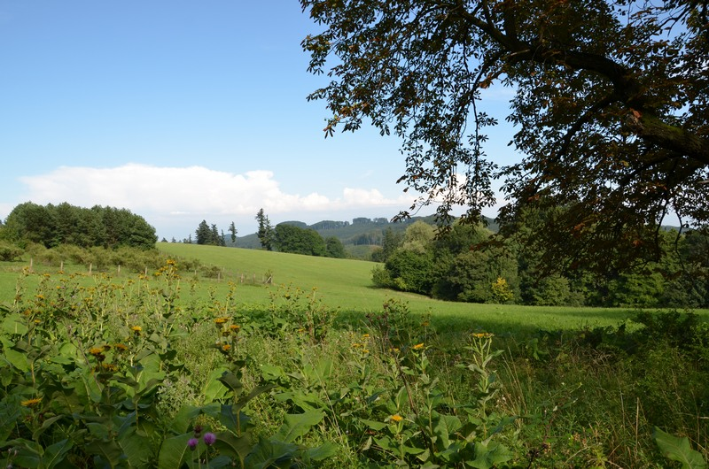
A takhle krásně tam bylo :)
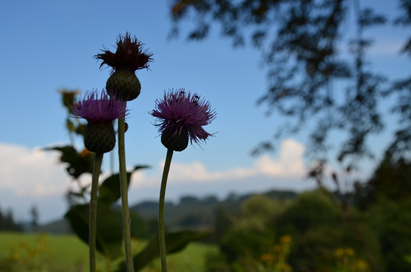
Bodláčí
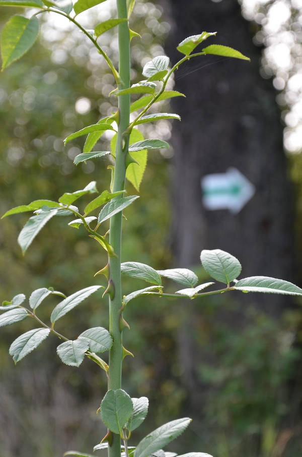
Po zelené…
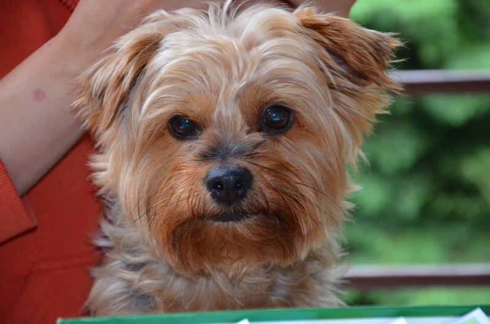
A nakonec ještě jednou Terezka, protože je taaaak roztomilá O:)!